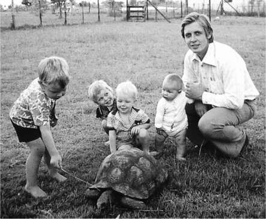
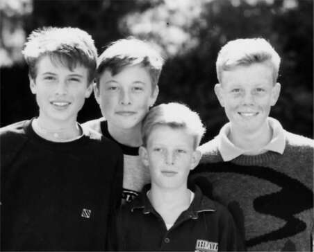
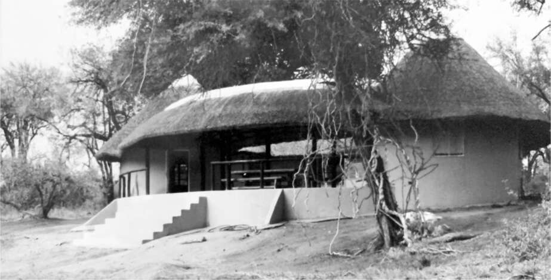

Chuyển nhà
Năm mười tuổi, Musk đã đưa ra một quyết định định mệnh, một quyết định mà sau này cậu sẽ hối hận: cậu quyết định chuyển đến sống với cha. Cậu tự mình đi chuyến tàu đêm nguy hiểm từ Durban đến Johannesburg. Khi nhìn thấy cha đang đợi mình ở nhà ga, cậu bắt đầu "rạng rỡ niềm vui, như mặt trời", Errol nói. "Chào bố, chúng ta đi ăn hamburger nhé!" cậu hét lên. Đêm đó, cậu chui vào giường cha và ngủ ở đó.
Tại sao cậu lại quyết định chuyển đến sống với cha mình? Elon thở dài và im lặng gần một phút khi tôi hỏi điều này. "Bố tôi cô đơn, rất cô đơn, và tôi cảm thấy mình nên ở bên cạnh ông ấy", cuối cùng cậu nói. "Ông ấy đã dùng những mánh khóe tâm lý với tôi." Cậu cũng rất yêu bà nội, mẹ của Errol, Cora, được gọi là Nana. Bà đã thuyết phục cậu rằng thật không công bằng khi mẹ cậu có cả ba đứa con còn cha cậu thì không có đứa nào.
Xét về một số khía cạnh, việc chuyển nhà không có gì quá bí ẩn. Elon mười tuổi, vụng về trong giao tiếp xã hội và không có bạn bè. Mẹ cậu yêu thương cậu, nhưng bà làm việc quá sức, phân tâm và dễ bị tổn thương. Ngược lại, cha cậu lại rất oai phong và nam tính, một người đàn ông to lớn với đôi bàn tay lớn và một sự hiện diện đầy mê hoặc. Sự nghiệp của ông có nhiều thăng trầm, nhưng vào thời điểm đó, ông đang cảm thấy dư dả. Ông sở hữu một chiếc Rolls-Royce Corniche mui trần màu vàng và quan trọng hơn, hai bộ bách khoa toàn thư, rất nhiều sách và nhiều loại dụng cụ kỹ thuật.
Vì vậy, Elon, vẫn còn là một cậu bé, đã chọn sống với ông. "Hóa ra đó là một ý tưởng tồi tệ", cậu nói. "Lúc đó tôi chưa biết ông ấy kinh khủng như thế nào." Bốn năm sau, Kimbal cũng theo sau. "Tôi không muốn để anh trai tôi ở một mình với ông ấy", Kimbal nói. "Bố tôi đã khiến anh trai tôi cảm thấy tội lỗi khi đến sống với ông ấy. Và rồi ông ấy cũng khiến tôi cảm thấy tội lỗi."
"Tại sao con lại chọn sống với một người gây ra đau khổ?" Maye Musk hỏi bốn mươi năm sau. "Tại sao con không thích một ngôi nhà hạnh phúc?" Rồi bà dừng lại một lúc. "Có lẽ đó chính là con người của con."
Sau khi các con trai chuyển đến, chúng đã giúp Errol xây một nhà nghỉ để ông có thể cho khách du lịch thuê tại Khu bảo tồn Động vật Hoang dã Timbavati, một vùng cây bụi nguyên sơ cách Pretoria khoảng ba trăm dặm về phía đông. Trong quá trình xây dựng, ban đêm họ ngủ quanh đống lửa, với súng trường Browning để bảo vệ mình khỏi sư tử. Gạch được làm bằng cát sông và mái nhà lợp cỏ. Là một kỹ sư, Errol thích nghiên cứu các đặc tính của nhiều loại vật liệu khác nhau, và ông đã làm sàn nhà bằng mica vì nó là một chất cách nhiệt tốt. Voi tìm kiếm nước thường làm bật gốc đường ống, và khỉ thường xuyên đột nhập vào các gian nhà và phóng uế, vì vậy các cậu bé có rất nhiều việc phải làm.
Elon thường đi săn cùng du khách. Mặc dù chỉ có một khẩu súng cỡ nòng.22, nhưng nó có ống ngắm tốt và cậu trở thành một tay thiện xạ. Cậu thậm chí còn giành chiến thắng trong một cuộc thi bắn súng địa phương, mặc dù cậu còn quá trẻ để nhận giải thưởng là một thùng rượu whisky.
Khi Elon chín tuổi, cha cậu đã đưa cậu, Kimbal và Tosca đi du lịch Mỹ. Họ lái xe từ New York qua vùng Trung Tây rồi xuống Florida. Elon bị cuốn hút bởi các trò chơi điện tử ăn xu mà cậu tìm thấy trong sảnh của các nhà nghỉ. "Đó là điều thú vị nhất", cậu nói. "Chúng tôi chưa có thứ đó ở Nam Phi." Errol thể hiện sự pha trộn giữa tính hào nhoáng và tiết kiệm của mình: ông thuê một chiếc Thunderbird nhưng họ ở trong những nhà trọ bình dân. "Khi đến Orlando, cha tôi từ chối đưa chúng tôi đến Disney World vì nó quá đắt", Musk nhớ lại. "Tôi nghĩ chúng tôi đã đến một công viên nước nào đó thay vào đó." Như thường lệ, Errol kể một câu chuyện khác, khẳng định rằng họ đã đến cả Disney World, nơi Elon thích trò đi xe nhà ma, và cả Six Flags over Georgia. "Tôi đã nói với chúng nhiều lần trong chuyến đi, 'Nước Mỹ là nơi các con sẽ đến sống một ngày nào đó.'"
Hai năm sau, ông đưa ba đứa con đến Hồng Kông. "Cha tôi có sự kết hợp nào đó giữa công việc kinh doanh hợp pháp và sự lừa đảo," Musk nhớ lại. "Ông ấy bỏ chúng tôi lại khách sạn, một nơi khá tồi tàn, và chỉ đưa cho chúng tôi năm mươi đô la hoặc gì đó, và chúng tôi không gặp ông ấy trong hai ngày." Họ xem phim Samurai và phim hoạt hình trên TV khách sạn. Bỏ Tosca lại phía sau, Elon và Kimbal lang thang trên đường phố, vào các cửa hàng điện tử, nơi họ có thể chơi trò chơi điện tử miễn phí. "Ngày nay, ai đó sẽ gọi cho dịch vụ bảo vệ trẻ em nếu ai đó làm những gì cha chúng tôi đã làm", Musk nói, "nhưng đối với chúng tôi hồi đó, đó là một trải nghiệm kỳ diệu."
Sau khi Elon và Kimbal chuyển đến sống với cha của họ ở ngoại ô Pretoria, Maye chuyển đến Johannesburg gần đó để gia đình có thể gần nhau hơn. Vào các ngày thứ Sáu, bà sẽ lái xe đến nhà Errol để đón các con trai. Sau đó, họ sẽ đến thăm bà của mình, Winnifred Haldeman bất khuất, người đã nấu một món gà hầm mà bọn trẻ ghét đến nỗi Maye sẽ đưa chúng đi ăn pizza sau đó.
Elon và Kimbal thường qua đêm tại ngôi nhà bên cạnh nhà bà của họ, nơi em gái của Maye, Kaye Rive, và ba con trai của cô sống. Năm anh em họ - Elon và Kimbal Musk cùng Peter, Lyndon và Russ Rive - đã trở thành một nhóm những chàng trai thích phiêu lưu và đôi khi hay tranh cãi. Maye dễ dãi và ít bảo vệ hơn em gái mình, vì vậy họ sẽ thông đồng với bà khi lên kế hoạch cho một cuộc phiêu lưu. "Nếu chúng tôi muốn làm điều gì đó như đi xem buổi hòa nhạc ở Johannesburg, bà ấy sẽ nói với em gái mình, tôi sẽ đưa chúng đến trại nhà thờ tối nay", Kimbal nói. "Sau đó, bà ấy sẽ thả chúng tôi xuống và chúng tôi sẽ đi làm những việc nghịch ngợm của mình."
Những chuyến đi đó có thể rất nguy hiểm. Peter Rive kể lại: “Tôi nhớ có lần tàu dừng lại, một cuộc ẩu đả lớn đã nổ ra, và chúng tôi chứng kiến một người bị đâm xuyên đầu. Chúng tôi trốn trong toa, rồi cửa đóng lại, và tàu cứ thế chạy tiếp”. Đôi khi, cả một băng nhóm lên tàu để săn đuổi đối thủ, chạy khắp các toa tàu và bắn súng máy. Một số buổi hòa nhạc là các cuộc biểu tình chống phân biệt chủng tộc, chẳng hạn như một buổi hòa nhạc năm 1985 ở Johannesburg đã thu hút 100.000 người. Những cuộc ẩu đả thường xuyên xảy ra. Kimbal nói: “Chúng tôi không cố gắng trốn tránh bạo lực, chúng tôi đã học cách sống sót qua nó. Điều đó dạy chúng tôi đừng sợ hãi nhưng cũng đừng làm những điều dại dột.”
Elon nổi tiếng là người gan dạ nhất. Khi những người anh em họ đi xem phim và có người làm ồn, Elon sẽ là người đến và bảo họ im lặng, ngay cả khi họ to lớn hơn nhiều. Peter nhớ lại: “Không bao giờ để nỗi sợ hãi chi phối quyết định là một nguyên tắc quan trọng đối với cậu ấy. Điều đó đã rõ ràng ngay từ khi cậu ấy còn nhỏ.”
Cậu cũng là người thích cạnh tranh nhất trong nhóm anh em họ. Có lần khi họ đạp xe từ Pretoria đến Johannesburg, Elon đã dẫn đầu, đạp rất nhanh. Vì vậy, những người khác đã tấp vào lề và đi nhờ một chiếc xe bán tải. Khi Elon gặp lại họ, cậu ấy tức giận đến mức bắt đầu đánh họ. Elon nói đó là một cuộc đua và họ đã gian lận.
Những cuộc ẩu đả như vậy rất phổ biến. Chúng thường xảy ra ở nơi công cộng, lũ trẻ dường như không quan tâm đến xung quanh. Một trong nhiều cuộc ẩu đả giữa Elon và Kimbal đã diễn ra tại một hội chợ nông thôn. Peter nhớ lại: “Họ vật lộn và đấm nhau túi bụi. Mọi người xung quanh hoảng sợ, và tôi phải nói với đám đông, ‘Không có gì đâu. Họ là anh em.’”. Mặc dù những cuộc ẩu đả thường chỉ vì những chuyện nhỏ nhặt, nhưng chúng có thể trở nên rất dữ dội. Kimbal nói: “Cách để chiến thắng là người đầu tiên đấm hoặc đá vào chỗ hiểm của đối phương. Điều đó sẽ kết thúc cuộc chiến vì bạn không thể tiếp tục nếu bị đánh vào chỗ hiểm.”
Musk là một học sinh giỏi, nhưng không phải là một siêu sao. Khi chín và mười tuổi, cậu ấy được điểm A môn tiếng Anh và Toán. Giáo viên của cậu nhận xét: “Cậu ấy nắm bắt các khái niệm toán học mới rất nhanh”. Nhưng có một lời nhận xét lặp đi lặp lại trong học bạ: “Cậu ấy làm bài rất chậm, hoặc vì cậu ấy mơ mộng hoặc đang làm những việc không nên làm”. “Cậu ấy hiếm khi hoàn thành bất cứ việc gì. Năm tới, cậu ấy phải tập trung vào việc học và không được mơ mộng trong giờ học”. “Bài văn của cậu ấy thể hiện một trí tưởng tượng sống động, nhưng cậu ấy không phải lúc nào cũng hoàn thành đúng giờ”. Điểm trung bình của cậu ấy trước khi vào trung học là 83/100.
Sau khi bị bắt nạt và đánh đập ở trường công, cha cậu đã chuyển cậu đến một trường tư thục, Trường Trung học Pretoria dành cho nam sinh. Dựa trên mô hình của Anh, trường có những quy định nghiêm ngặt, phạt roi, bắt buộc cầu nguyện và mặc đồng phục. Ở đó, cậu ấy đạt điểm xuất sắc ở tất cả các môn trừ hai môn: tiếng Afrikaans (cậu ấy đạt 61/100 trong năm cuối) và giáo dục tôn giáo (“không nỗ lực”, giáo viên nhận xét). Cậu ấy nói: “Tôi không thực sự nỗ lực vào những thứ mà tôi cho là vô nghĩa. Tôi thà đọc sách hoặc chơi trò chơi điện tử.” Cậu ấy đạt điểm A trong phần thi vật lý của kỳ thi tốt nghiệp, nhưng hơi ngạc nhiên là chỉ đạt điểm B trong phần thi toán.
Trong thời gian rảnh rỗi, cậu ấy thích chế tạo tên lửa nhỏ và thử nghiệm các hỗn hợp khác nhau—chẳng hạn như clo trong bể bơi và dầu phanh—để xem hỗn hợp nào sẽ tạo ra tiếng nổ lớn nhất. Cậu ấy cũng học các trò ảo thuật và cách thôi miên người khác, từng thuyết phục Tosca rằng cô ấy là một con chó và khiến cô ấy ăn thịt xông khói sống.
Thời còn ở Nam Phi, hai anh em họ Elon và Kimbal đã thử sức với nhiều ý tưởng kinh doanh. Một dịp lễ Phục sinh, họ làm trứng sô cô la, bọc giấy bạc và bán tận nhà. Kimbal nghĩ ra một chiêu khá độc đáo. Thay vì bán rẻ hơn so với trứng ở cửa hàng, họ lại bán đắt hơn. "Nhiều người thấy giá cao thì ngần ngại," anh kể, "nhưng chúng tôi nói với họ, 'Mua trứng của chúng tôi là bạn đang ủng hộ các nhà tư bản tương lai đấy.'"
Đọc sách vẫn là cách Elon tìm về thế giới riêng của mình. Có khi cậu say mê đọc cả buổi chiều đến tận khuya, mỗi lần kéo dài đến chín tiếng đồng hồ. Khi gia đình đến nhà ai đó chơi, cậu lại biến mất vào thư viện của chủ nhà. Khi cả nhà đi vào phố, cậu thường tách ra và sau đó được tìm thấy ở hiệu sách, ngồi dưới sàn, đắm chìm trong thế giới riêng. Cậu cũng rất mê truyện tranh. Niềm đam mê mãnh liệt của các siêu anh hùng đã gây ấn tượng mạnh với cậu. "Họ luôn cố gắng cứu thế giới, với quần lót mặc bên ngoài hay những bộ giáp sắt bó sát, thật kỳ lạ khi nghĩ về điều đó," cậu nói. "Nhưng họ đang cố gắng cứu thế giới."
Elon đọc hết cả hai bộ bách khoa toàn thư của bố và trở thành một "cậu bé thiên tài" trong mắt mẹ và em gái. Tuy nhiên, với những đứa trẻ khác, cậu chỉ là một tên mọt sách khó ưa. "Nhìn mặt trăng kìa, chắc nó cách đây cả triệu dặm," một người anh họ từng thốt lên. Elon đáp lại, "Không, khoảng 239.000 dặm, tùy thuộc vào quỹ đạo."
Một cuốn sách cậu tìm thấy trong văn phòng của bố mô tả những phát minh vĩ đại sẽ xuất hiện trong tương lai. "Tôi thường đi học về rồi vào một căn phòng nhỏ trong văn phòng của bố và đọc đi đọc lại cuốn sách đó," cậu kể. Trong số những ý tưởng đó có một loại tên lửa được đẩy bằng động cơ ion, sử dụng các hạt thay vì khí để tạo lực đẩy. Một đêm khuya tại phòng điều khiển của căn cứ tên lửa ở miền nam Texas, Elon đã kể cho tôi nghe rất nhiều về cuốn sách đó, bao gồm cả cách động cơ ion hoạt động trong môi trường chân không. "Cuốn sách đó là thứ đầu tiên khiến tôi nghĩ đến việc du hành đến các hành tinh khác," cậu nói.

Elon chọc một con rùa và Errol đang quan sát

Kimbal và Elon với Peter và Russ Rive

Nhà nghỉ trong Khu bảo tồn Động vật Hoang dã Timbavati